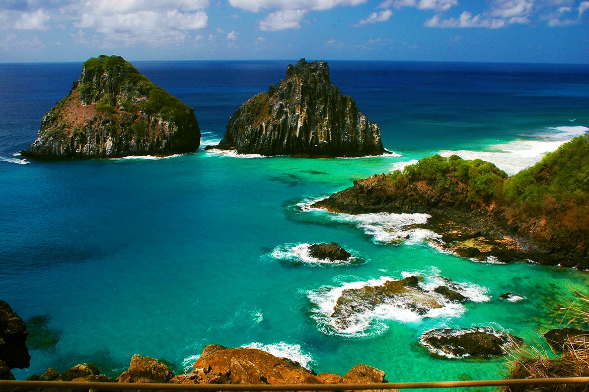

Sobre Fernando de Noronha
Fernando de Noronha é um arquipélago vulcânico conhecido por sua beleza natural e rica biodiversidade. Venha conhecer a história e as maravilhas dessa ilha única.
História
Fernando de Noronha foi descoberto em 1503 por uma expedição portuguesa e tem uma rica história que inclui exploração, colonização e conservação. A ilha desempenhou um papel estratégico durante o período colonial e, mais recentemente, tornou-se um importante destino turístico e área de conservação ambiental.
Cultura
A cultura de Fernando de Noronha é uma mistura única de tradições indígenas e influências portuguesas. Os moradores locais mantêm práticas culturais vibrantes, como festas tradicionais e culinária típica que refletem a rica herança cultural da ilha.
Galeria
Praia do Sancho
Uma das praias mais bonitas do mundo, com águas cristalinas e uma vista espetacular.
Baía dos Porcos
Conhecida por suas formações rochosas únicas e águas turquesa.
Mirante dos Golfinhos
Um ponto de observação perfeito para avistar golfinhos e aproveitar o pôr do sol.